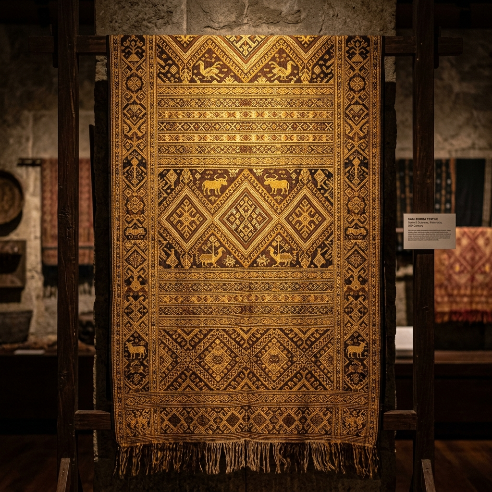

Digital Curator
Selamat datang di Lobo Palu, platform kurasi digital mandiri yang didedikasikan untuk mendokumentasikan, melindungi, dan melestarikan kekayaan tradisi lisan, naskah kuno, tenun Bomba, seni pertunjukan, dan memori kolektif budaya Sulawesi Tengah.

Preservasi Aksara Kuno, Lembah Palu
Komunitas Seni Lobo Palu didirikan sebagai ruang kolaborasi budaya. Melalui inisiatif Digital Curator ini, kami memanggil para budayawan, akademisi, pemuda, dan kurator publik untuk berkontribusi mengarsipkan artefak kebudayaan Kaili. Setiap foto, rekaman suara tuturan tetua adat, hingga digitalisasi tenun bomba merupakan kepingan berharga untuk memori generasi masa depan.
Seluruh materi yang dimasukkan melewati proses validasi data dan metadata terakreditasi.
Penyimpanan aset digital berbasis cloud database menjamin aksesibilitas jangka panjang.
Mendukung pelestarian inklusif yang dapat diakses oleh peneliti dan masyarakat luas.
Memuat koleksi arsip...
Dokumentasi visual upacara adat, ekspedisi kebudayaan, peninggalan situs megalitikum, serta potret sosial masyarakat Kaili terdahulu.
Digitalisasi lembaran naskah kuno, surat kesepakatan kerajaan lokal, silsilah keluarga adat Kaili, hingga transkrip tulisan kuno.
Rekaman audio tutur tetua adat, cerita rakyat dongeng Kaili, sejarah lisan asal-usul desa, serta tradisi lisan (Vunja / Kayori).
Koleksi foto detail kain tradisional Bomba, tenunan sutra Donggala, cara pembuatan tenun, serta pakaian kulit kayu warisan leluhur.
Artefak Terdokumentasi
Kurator Terdaftar
Kategori Seni Budaya
Pelestarian Digital
Punya dokumentasi foto ritual, kain tradisional keluarga, atau rekaman tuturan kakek nenek? Daftar sebagai kurator digital sekarang dan unggah arsip berharga Anda.